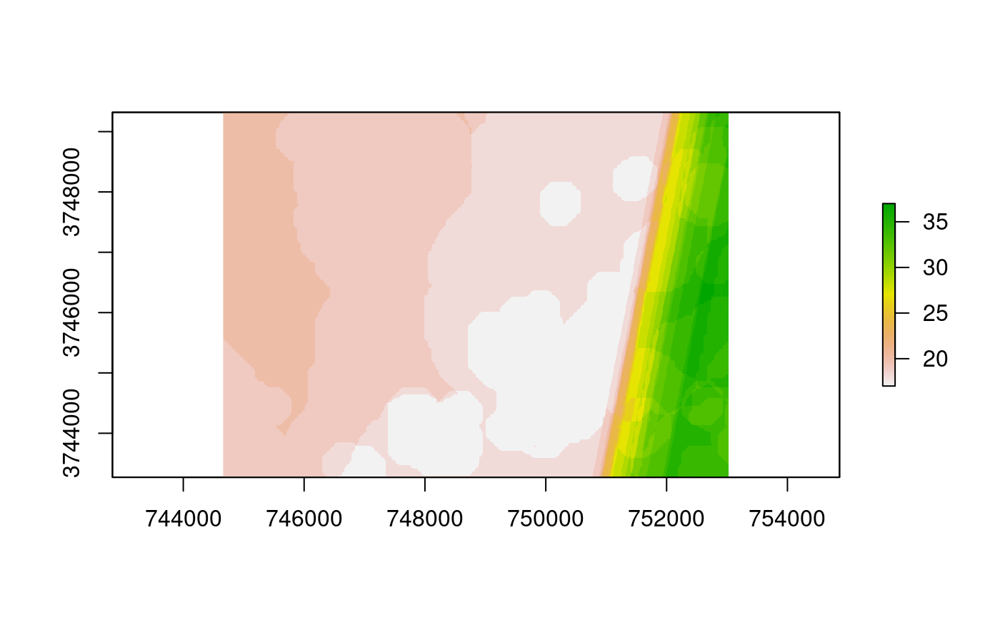
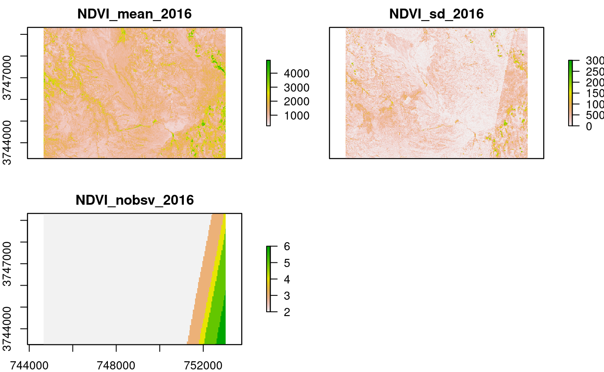
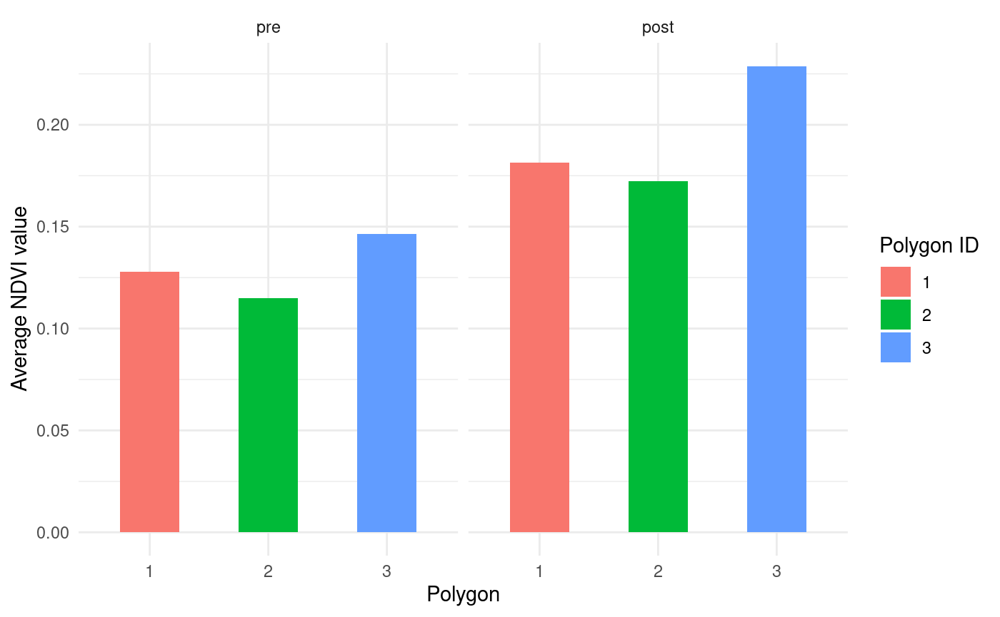

a03_s2-analysis.Rmdlibrary(raster) #> Loading required package: sp library(sf) #> Linking to GEOS 3.8.0, GDAL 3.0.4, PROJ 6.3.1 br = brick(system.file("extdata", "testregion_comparisonRaster.tif", package = "sen2tool")) layernames = readRDS(system.file("extdata", "testregion_comparisonRaster_layernames.rds", package = "sen2tool")) names(br) = layernames aoi = st_read(system.file("extdata", "testregion_data.gpkg", package = "sen2tool")) #> Reading layer `testregion_data' from data source `/tmp/RtmpT6n3o4/temp_libpath1a55f4f6041/sen2tool/extdata/testregion_data.gpkg' using driver `GPKG' #> Simple feature collection with 3 features and 47 fields #> geometry type: MULTIPOLYGON #> dimension: XYZ #> bbox: xmin: 744663.5 ymin: 3743273 xmax: 753029.7 ymax: 3749316 #> z_range: zmin: 0 zmax: 0 #> projected CRS: WGS 84 / UTM zone 42N
In the previous vignettes we downloaded and preprocessed Sentinel 2 tiles matching the spatiotemporal extent of the area of interest. With the evalVI() routine it is possible to analyse the preprocessed raster data based on the zonal statistics of a number of polygons. Here we are assuming that we downloaded and preprocessed Sentinel 2 datasets from June to September for each of the years 2016 to 2019 just as explained in the Download vignette. Additionally, calcIndices() was used to calculate the NDVI of the cloud-free images. Now, the evalVI() function allows us to specify the years which are before and after a point in time we are interested in investigating the NDVI for our polygons. The function will detect which rasters belong to the pre-intervention time period and which ones belong to the post-intervention period and process them separately. In a first step, all images belonging to a single year are averaged. The same procedure is applied for the averaged images within the pre- and post-period. After the averaging of the pixel values in the time dimension, zonal statistics are extracted for the specified polygons and the difference between the post-period and the pre-period is calculated. The call to the functions looks like this:
images = list.files("path/to/ndvi/rasters", pattern = ".tif$", full.names = TRUE) aoi = st_read("path/to/aoi.shp") aoi_data = evalVI(vifiles = images, pre_years = c("2016", "2017"), post_years = c("2018", "2019"), ncores = 2, aoi = aoi, name = "NDVI", returnRaster = TRUE, rasterdir = "path/to/outdir", extent_name = "testregion") br = brick("path/to/outdir/testregion_comparisionRaster.rif") layernames = readRDS("path/to/outdir/testregion_comparisionRaster_layernames.rds") names(br) = layernames
Here we specified that the resulting raster file should be written to disk, which is why we additionally have to specify an extent_name which is appended to the filename. With the settings specified in the code above, we will get a raster file with 35 layers. These layers correspond to the mean, median, maximum, standard deviation and number of observations per pixel for each of the individual years, the pre-period, the post-period, and the difference between these two periods.
data.frame(layer = 1:nlayers(br), variable = names(br)) #> layer variable #> 1 1 NDVI_mean_2016 #> 2 2 NDVI_median_2016 #> 3 3 NDVI_max_2016 #> 4 4 NDVI_sd_2016 #> 5 5 NDVI_nobsv_2016 #> 6 6 NDVI_mean_2017 #> 7 7 NDVI_median_2017 #> 8 8 NDVI_max_2017 #> 9 9 NDVI_sd_2017 #> 10 10 NDVI_nobsv_2017 #> 11 11 NDVI_mean_2018 #> 12 12 NDVI_median_2018 #> 13 13 NDVI_max_2018 #> 14 14 NDVI_sd_2018 #> 15 15 NDVI_nobsv_2018 #> 16 16 NDVI_mean_2019 #> 17 17 NDVI_median_2019 #> 18 18 NDVI_max_2019 #> 19 19 NDVI_sd_2019 #> 20 20 NDVI_nobsv_2019 #> 21 21 NDVI_mean_pre #> 22 22 NDVI_median_pre #> 23 23 NDVI_max_pre #> 24 24 NDVI_sd_pre #> 25 25 NDVI_nobsv_pre #> 26 26 NDVI_mean_post #> 27 27 NDVI_median_post #> 28 28 NDVI_max_post #> 29 29 NDVI_sd_post #> 30 30 NDVI_nobsv_post #> 31 31 NDVI_mean_diff #> 32 32 NDVI_median_diff #> 33 33 NDVI_max_diff #> 34 34 NDVI_sd_diff #> 35 35 NDVI_nobsv_diff
One important feature one has to keep in mind about satellite observations is that a given area of interest might only be partly covered by the tiles the satellite data is provided. This is the reasons why some pixels might be more frequently covered by observations than others. Let us visualisze this effect by looking at the number of observations per pixels for 2019.
plot(br$NDVI_nobsv_2019)
 As we can see here, the East side of the area of interest is more frequently covered by individual satellite observations than the center and West part. We can also observe round shapes in the center of the area which represent missing observations due to clouds. With this high number of observations, the effects on the values of the NDVI are not very substantial. However, as the number of observations generally decrease some bias might be introduced. This can be visuallised by using the data of 2015. In June of that year Sentinel-2A was launched and Sentinel-2B was not launched until March 2017. Let’s take a look at the number of observations, the mean value and the standard deviation.
 We see that the majority of the study area only show two observations while on the East side this value increases up to six. For the mean NDVI no clear bias is observable, however when it comes to the standard deviation we clearly observe artifacts based on the number of observations. In the center locations the parameters are calculated based only on two single values while in the East more observations contribute to the calculations. This effect should be kept in mind when analyzing a given study area. A high number of observations generally reduces the bias, which is why the effect should not be as substantial for time periods after March 2017 when both satellites started to deliver observation data.
The zonal statistics derived for the polygons of interest are based on these raster data sets. All pixels of each layer presented above is extracted for each polygon and an averaged value is returned. This sums up to a total of 35 additional columns in the case presented here
names(aoi) #> [1] "Name" "descriptio" "timestamp" "begin" #> [5] "end" "altitudeMo" "tessellate" "extrude" #> [9] "visibility" "drawOrder" "icon" "snippet" #> [13] "NDVI_mean_2016" "NDVI_median_2016" "NDVI_max_2016" "NDVI_sd_2016" #> [17] "NDVI_nobsv_2016" "NDVI_mean_2017" "NDVI_median_2017" "NDVI_max_2017" #> [21] "NDVI_sd_2017" "NDVI_nobsv_2017" "NDVI_mean_2018" "NDVI_median_2018" #> [25] "NDVI_max_2018" "NDVI_sd_2018" "NDVI_nobsv_2018" "NDVI_mean_2019" #> [29] "NDVI_median_2019" "NDVI_max_2019" "NDVI_sd_2019" "NDVI_nobsv_2019" #> [33] "NDVI_mean_pre" "NDVI_median_pre" "NDVI_max_pre" "NDVI_sd_pre" #> [37] "NDVI_nobsv_pre" "NDVI_mean_post" "NDVI_median_post" "NDVI_max_post" #> [41] "NDVI_sd_post" "NDVI_nobsv_post" "NDVI_mean_diff" "NDVI_median_diff" #> [45] "NDVI_max_diff" "NDVI_sd_diff" "NDVI_nobsv_diff" "geom"
Let’s have a quick look how the average NDVI values behave differentiated between the pre- and post-intervention years.
library(dplyr) #> #> Attaching package: 'dplyr' #> The following objects are masked from 'package:raster': #> #> intersect, select, union #> The following objects are masked from 'package:stats': #> #> filter, lag #> The following objects are masked from 'package:base': #> #> intersect, setdiff, setequal, union library(ggplot2) library(tidyr) #> #> Attaching package: 'tidyr' #> The following object is masked from 'package:raster': #> #> extract library(stringr) aoi$id = factor(1:nrow(aoi)) aoi %>% st_drop_geometry %>% select(ends_with("_pre"), ends_with("_post"), "id") %>% gather(var,value, -id) %>% separate(var, c("para", "var", "period"), "_") %>% mutate(period = factor(period, levels = c("pre","post"), labels = c("pre", "post"))) %>% filter(var == "mean") %>% mutate(value = value/10000) %>% ggplot() + geom_bar(aes(y=value, x=id, fill = id), stat="identity", width = .5)+ facet_wrap(~period)+ labs(fill = "Polygon ID", y = "Average NDVI value", x="Polygon")+ theme_minimal()
